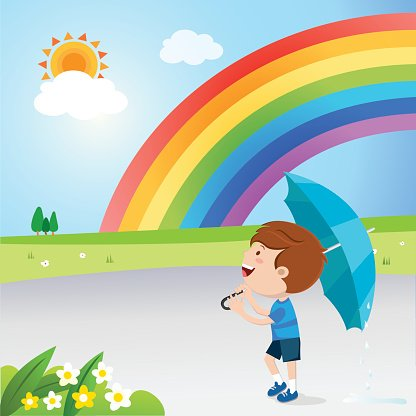

Un arcoíris después de la tormenta
Tras una larga conversación, Matheo se sinceró con sus padres y les contó todo sobre su terror a la lluvia. Ellos lo escucharon con paciencia y cariño, y le explicaron que la lluvia era un fenómeno natural, necesario para la vida y que no había nada que temer.
Un día, después de una fuerte tormenta, Matheo vio un hermoso arcoíris en el cielo. Sus colores vibrantes y su belleza lo cautivaron. En ese momento, se dio cuenta de que la lluvia no era solo truenos y relámpagos, sino también un regalo de la naturaleza que podía traer consigo cosas hermosas.